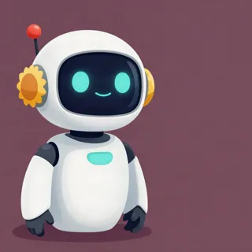

Aprende inglés conversando con personajes en un mundo 3D. Gratis: con tu propia IA en la nube, o con una IA dentro de tu teléfono.
Cuéntale al tutor sobre ti
Elige el cerebro de tu tutor
Conversación natural y rápida, como en las apps de pago. Necesita internet. Usa tu propio servidor gratuito (Cloudflare + Google Gemini); los pasos están en el README.
Funciona sin internet. Usa wifi para la descarga. El modelo queda guardado en el teléfono; no se envía nada a ningún servidor.
Preparando…
Try Your New Language
Try Your New Language

Tutor apagado
Where to today?
Escoge un lugar y conversa. Escucha mucho, entiende el sentido; las correcciones llegan sin cortar la charla.
0 mininput hoy
0 hinput total
0días seguidos
Lugares
Juego de roles
Más práctica
Cómo funciona: adquieres un idioma al entender mensajes un poquito por encima de tu nivel (i+1). El personaje nunca interrumpe la charla para corregirte; las correcciones aparecen aparte, bajo tu mensaje, y al final recibes un resumen de tus errores. Puedes cambiarlo en Ajustes. Con Manos libres conversas solo con la voz mientras haces otra cosa.
Try Your New Language
Puedes decir
Listo
Di «repeat» para repetir, «slower» para más despacio, «translate» para oírlo en español, «help» para ideas y «stop» para salir.